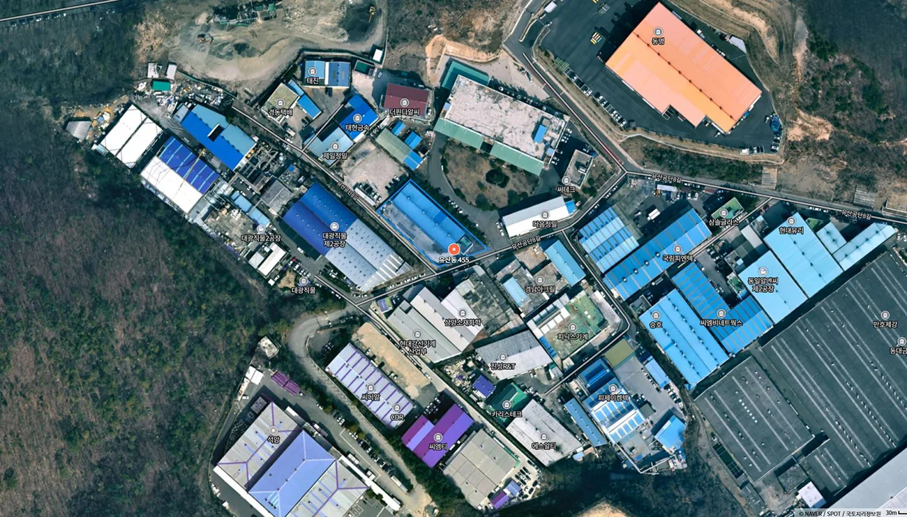
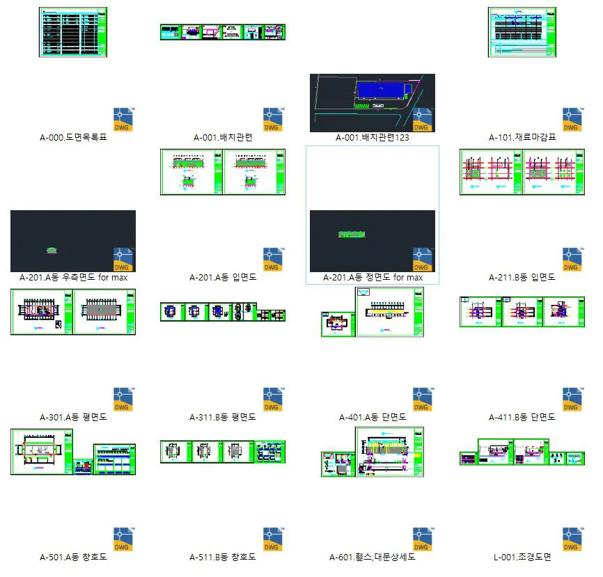
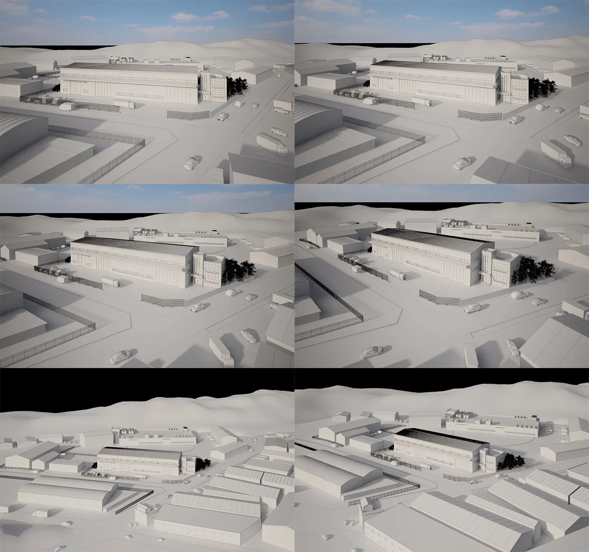
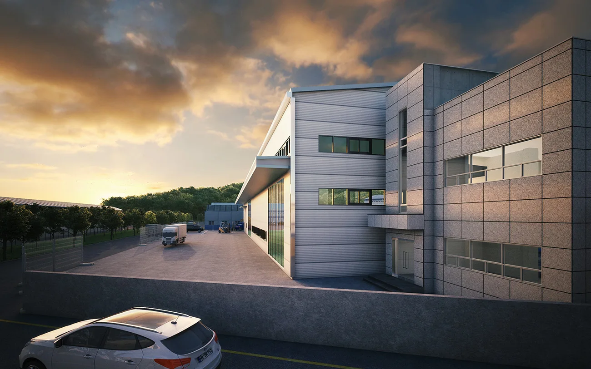

프로젝트 소개
이번 프로젝트는 경상남도 양산시 유산동 455번지에 들어설 예정인 산업시설 부지를 시각적으로 표현하는 조감도 제작 작업입니다. 산업용 건축물은 흔히 기능성과 효율성에 중점을 두지만, 이번 조감도 제작에는 그 이상을 담고자 했습니다.
사업대상지: 경상남도 양산시 유산동 455

프로젝트 개요
공장 배치도와 입면도, 외부 마감재에 대한 대략적인 설명과, 건물 구성, 부지 규모를 파악하였습니다.

기본 구조 모델링을 마친 후, 드론 시점의 조망 앵글과 정면 투시 앵글 두 가지를 제안드렸고, 의뢰처에서 내부 검토 후 최종 앵글을 확정지었습니다.

도로, 주변 자연지형, 차량, 인물, 간판 및 외부 텍스처까지 세부 요소들을 추가하면서 생동감 있는 이미지를 구현하였습니다. 중간 단계마다 수정 요청 사항을 공유받아 정밀하게 반영하였습니다.
조명, 명암, 색감, 원근감을 보정하여 현실감과 전달력을 높인 최종 조감도를 완성하고 납품드렸습니다.
아래는 이번에 제작된 최종 이미지들입니다.
경상남도 양산시 유산동 공장 조감도
공장 전체 조망 이미지


마치며
산업시설이라고 해서 무미건조하게 표현될 필요는 없습니다.공간의 가치와 비전을 가장 먼저 전달할 수 있는 수단은 ‘이미지’이며,그 첫인상이 바로 조감도입니다.
메이크 그룹은 수많은 주거단지, 복합시설, 공장 및 물류단지까지다양한 시각화 경험을 바탕으로, 단지의 성격에 맞는 분위기와 전달력을 갖춘 이미지를 제공합니다.
기획의도를 시각으로 녹여내고, 보는 이의 머릿속에 공간을 그려주는 것이우리의 역할이라 믿고, 앞으로도 진정성 있는 결과물을 만들어가겠습니다.
CONTACT
홈페이지 : https://www.makegroup.co.kr
블로그 : https://blog.naver.com/makegroupcg
TEL : 070-4127-5640